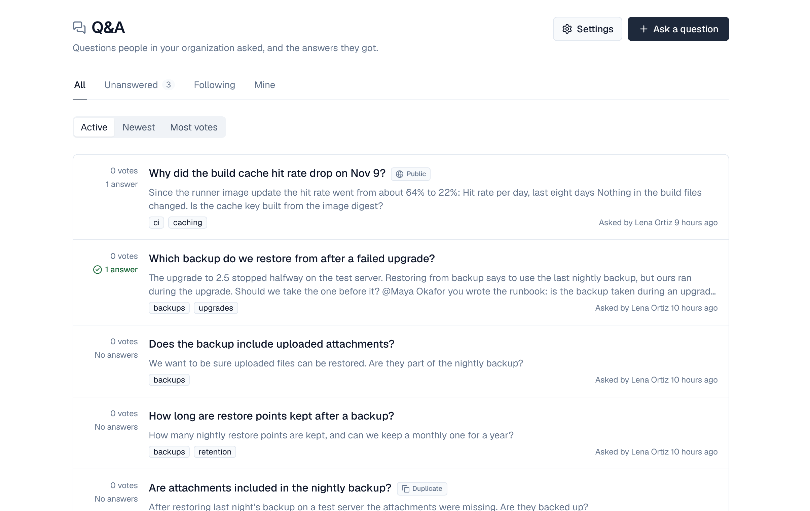
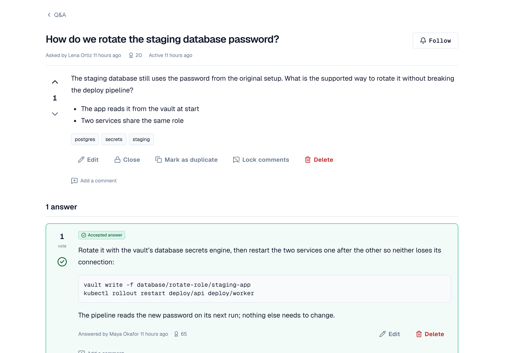

1. Overview
Q&A in the left menu is a place for questions and answers across your organization, separate from spaces. Everyone in the organization reads, asks, answers and votes; the organization's admins moderate. Answers that help get votes, and the person who asked accepts the one that worked.

2. Find a question
- The tabs show All, Unanswered, Mine and Following; Order sorts by Active, Newest or Most votes.
- Select a tag to see its questions. Questions also come up in the Wiki's search.
3. Ask a question
- Select Ask a question — In Q&A, or + Create at the top of the Wiki.
- Write a specific title — 10 to 200 characters. While you type, Questions that may already answer yours lists similar ones.
- Add the details — What you expected, what happened, what you tried. The editor has headings, lists, quotes, code blocks, tables, links and images (paste or add them, up to 20 per post), and @ mentions people in your organization.
- Add up to 5 tags — Lower-case words such as backups; suggestions show as you type.
- Select Post question — You follow it from now on.
Under a published page, Questions about this page lists questions that link to it, and Ask about this page starts a question with a link to it. A question lists the Wiki pages it links to that you can read.
4. Answer, vote and accept
- Write in Your answer and select Post answer. Your answer is saved as a draft while you type and kept for 30 days; Discard draft throws it away. Answering follows the question.
- Vote a question or an answer up (This is useful) or down (This isn't useful). You can't vote on your own posts.
- The person who asked (or a moderator) selects Accept this answer on the one that worked; Take back the accept undoes it. One answer is accepted at a time.
- Comments under a question or an answer are short notes on one line, up to 600 characters and 30 per post.

5. Edit, history and delete
You edit your own questions, answers and comments. History shows what a post said before each edit, to its author and moderators. You can delete your own question while it has no answers, and your own answers and comments.
6. Follow
Follow on a question tells you about new answers; Follow tag on a tag tells you about new questions with it. The Following tab lists both. You also get an alert when someone comments on your post, accepts your answer or mentions you.
7. Reputation
People earn points for posts others find useful: 10 for each vote up and 2 off for each vote down on their questions and answers, and 15 for each accepted answer (not on their own question). Points show next to names and are counted again every 15 minutes.
8. Moderation
Moderators (the organization's admins) edit, Close and Reopen, and delete any post; Mark as duplicate points a question to an earlier one (it then takes no answers); Lock comments; and merge one tag into another. See Q&A moderation.
9. Public questions
When your administrators allow anonymous access and the moderators turn on Allow public questions in Q&A Settings, a question can be a Public question: anyone can read it and its answers, even without signing in, at the Wiki's Public questions list. People are shown there by name only.
- The person who asked can make a question public before anyone answers or comments; moderators can at any time.
- Signed-out readers can't answer or vote: Answer or vote in Q&A sends them to sign in.
- Turning the setting off hides every public question again.